Analyze data with Multivariate INTegration (MINT) Sparse Partial Least Squares Discriminant Analysis (sPLS-DA).
Source:R/cyt_mint_splsda.R
cyt_mint_splsda.RdThis function performs a MINT (Multivariate INTegrative) sPLS-DA to handle
batch effects by modeling a global biological signal across different studies or batches.
If a second grouping column (group_col2) is provided, the analysis is stratified
and performed for each level of that column.
Usage
cyt_mint_splsda(
data,
group_col,
batch_col,
group_col2 = NULL,
colors = NULL,
pdf_title = NULL,
ellipse = TRUE,
bg = FALSE,
var_num = 20,
comp_num = 2,
scale = NULL,
cim = FALSE,
roc = FALSE,
verbose = FALSE
)Arguments
- data
A matrix or data frame containing the variables. Columns not specified by
group_col,group_col2, ormultilevel_colare assumed to be continuous variables for analysis.- group_col
A string specifying the first grouping column name that contains grouping information. If
group_col2is not provided, it will be used for both grouping and treatment.- batch_col
A string specifying the column that identifies the batch or study for each sample.
- group_col2
A string specifying the second grouping column name. Default is
NULL.- colors
A vector of splsda_colors for the groups or treatments. If
NULL, a random palette (usingrainbow) is generated based on the number of groups.- pdf_title
A string specifying the file name for saving the PDF output. If set to NULL, the function runs in IDE plots pane.
- ellipse
Logical. Whether to draw a 95\ Default is
FALSE.- bg
Logical. Whether to draw the prediction background in the figures. Default is
FALSE.- var_num
Numeric. The number of variables to be used in the PLS-DA model.
- comp_num
Numeric. The number of components to calculate in the sPLS-DA model. Default is 2.
- scale
Character. Option for data transformation; if set to
"log2", a log2 transformation is applied to the continuous variables. Default isNULL.- cim
Logical. Whether to compute and plot the Clustered Image Map (CIM) heatmap. Default is
FALSE.- roc
Logical. Whether to compute and plot the ROC curve for the model. Default is
FALSE.- verbose
A logical value indicating whether to print additional informational output to the console. When
TRUE, the function will display progress messages, and intermediate results whenFALSE(the default), it runs quietly.
Value
Plots consisting of the classification figures, ROC curves, correlation circle plots, and heatmaps.
Details
When verbose is set to TRUE, additional information about the analysis and confusion matrices
are printed to the console. These can be suppressed by keeping verbose = FALSE.
References
Rohart F, Eslami A, Matigian, N, Bougeard S, Lê Cao K-A (2017). MINT: A multivariate integrative approach to identify a reproducible biomarker signature across multiple experiments and platforms. BMC Bioinformatics 18:128.
Examples
# Loading ExampleData5 dataset with batch column
data_df <- ExampleData5[,-c(2,4)]
data_df <- dplyr::filter(data_df, Group != "ND")
cyt_mint_splsda(data_df, group_col = "Group",
batch_col = "Batch", colors = c("black", "purple"),
ellipse = TRUE, var_num = 25, comp_num = 2,
scale = "log2", verbose = FALSE)
 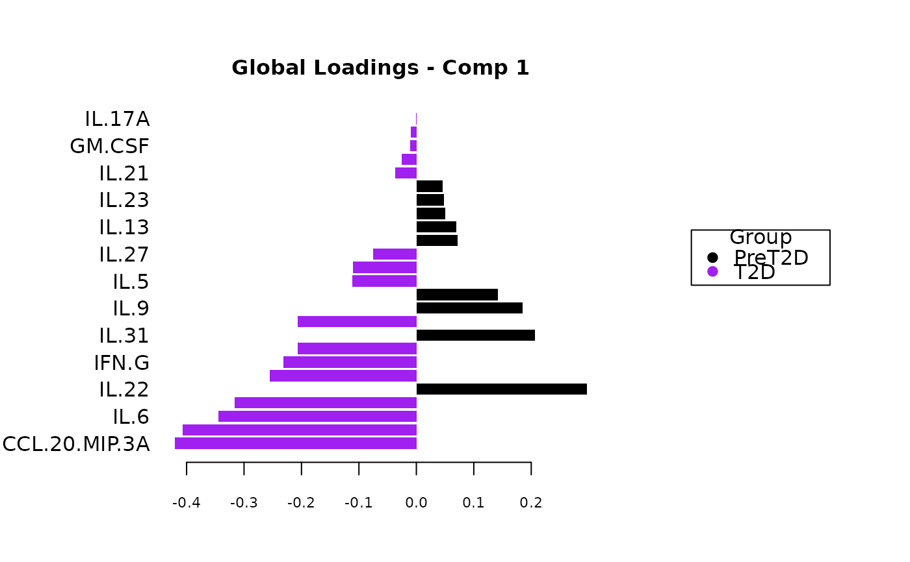
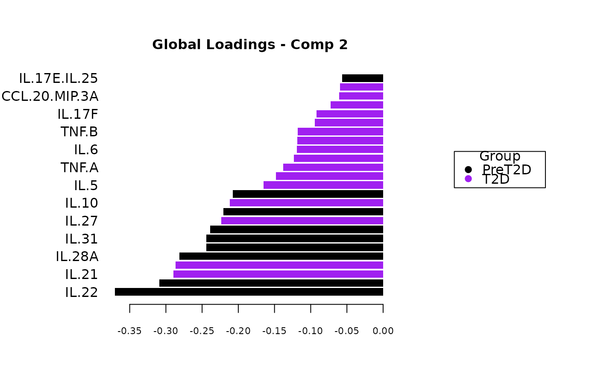
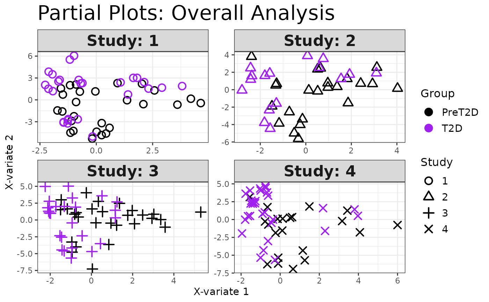
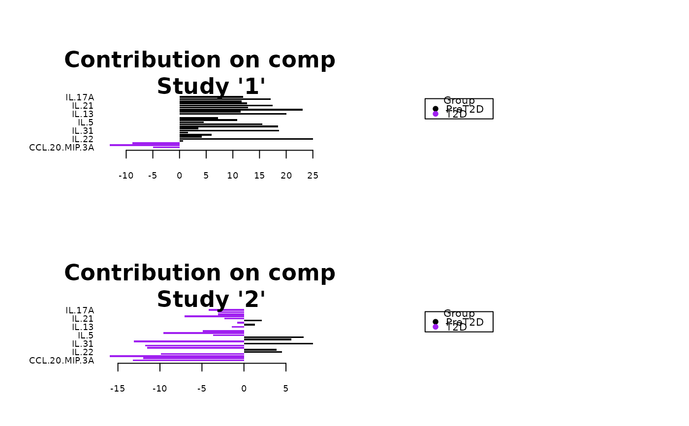
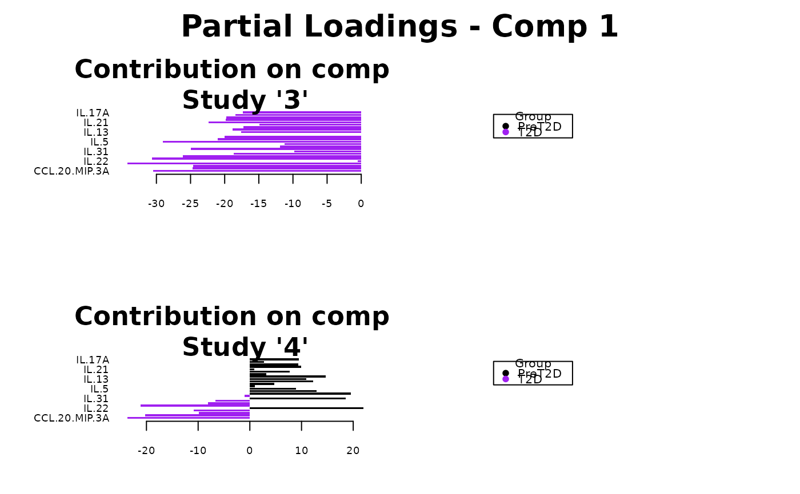
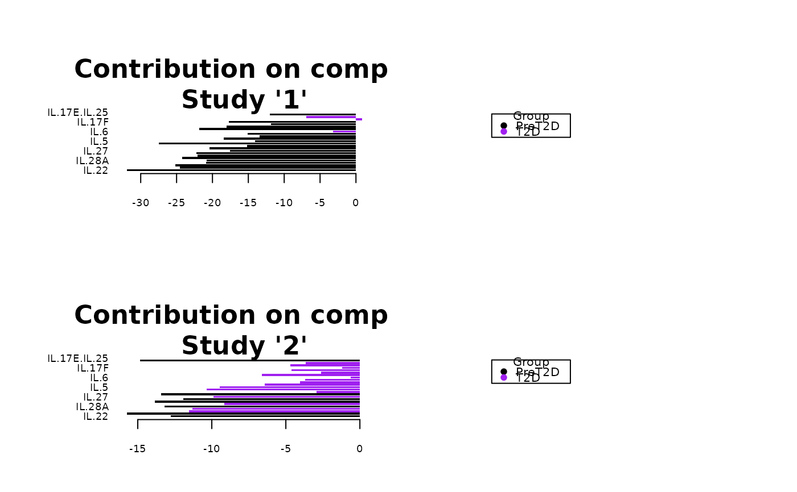
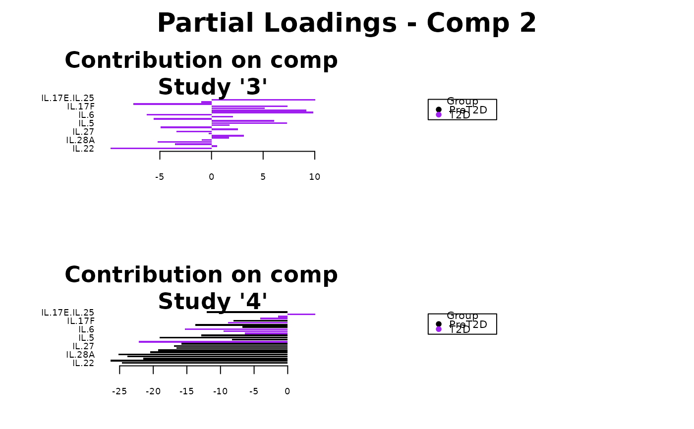
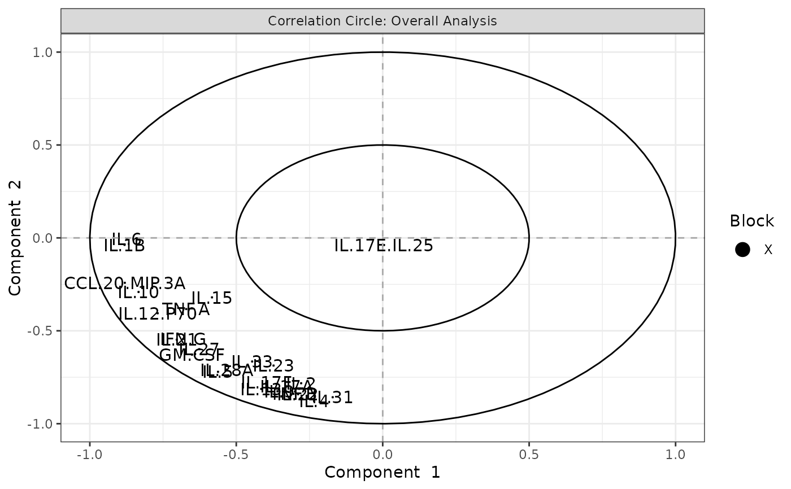
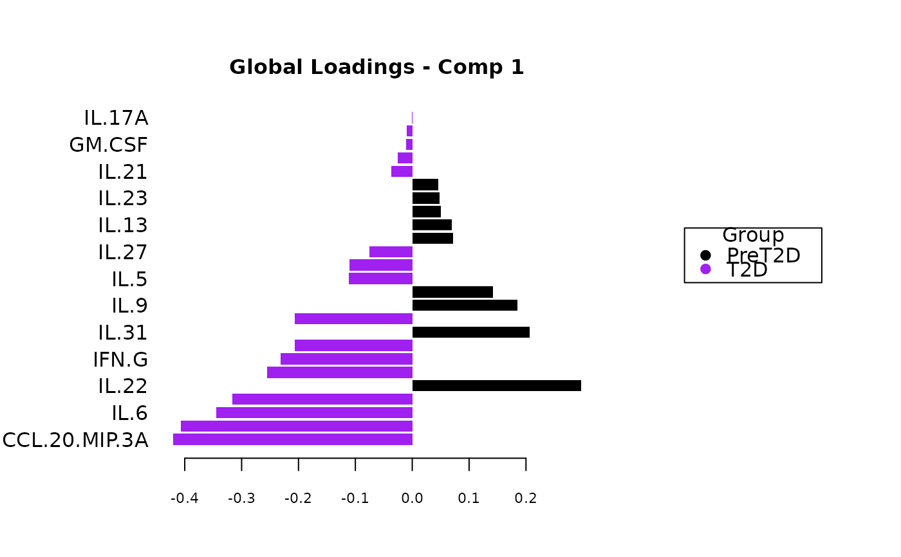
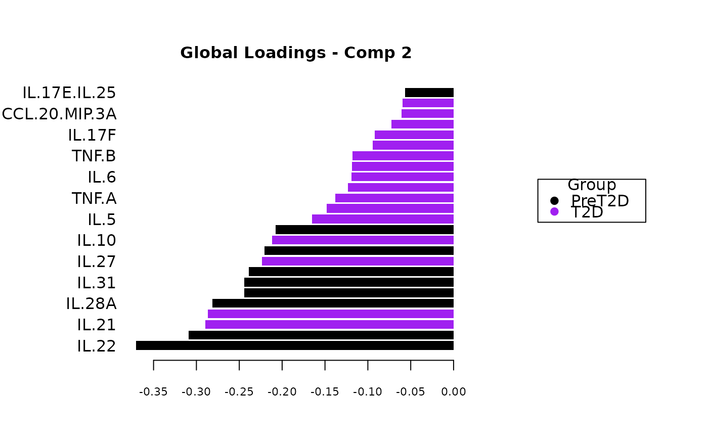
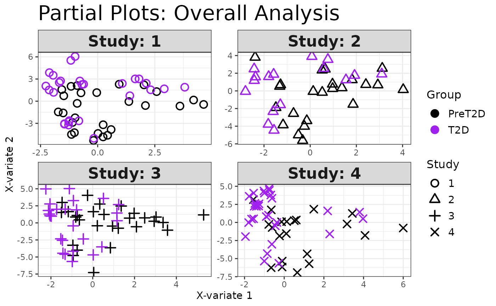
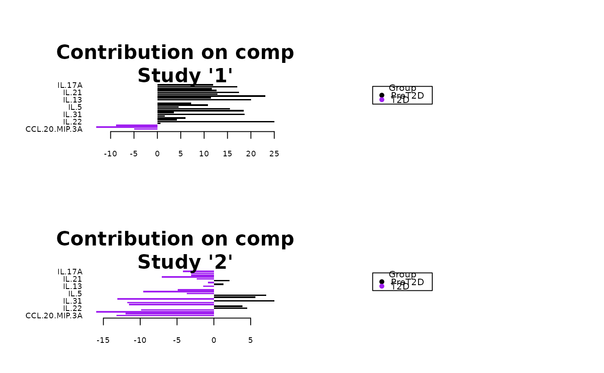
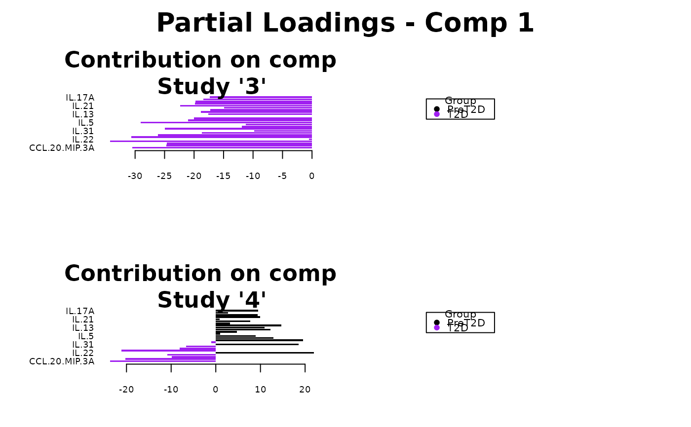
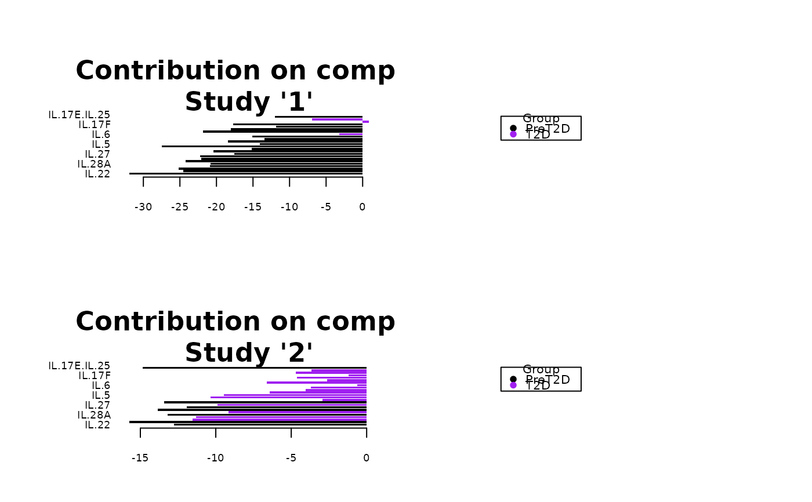
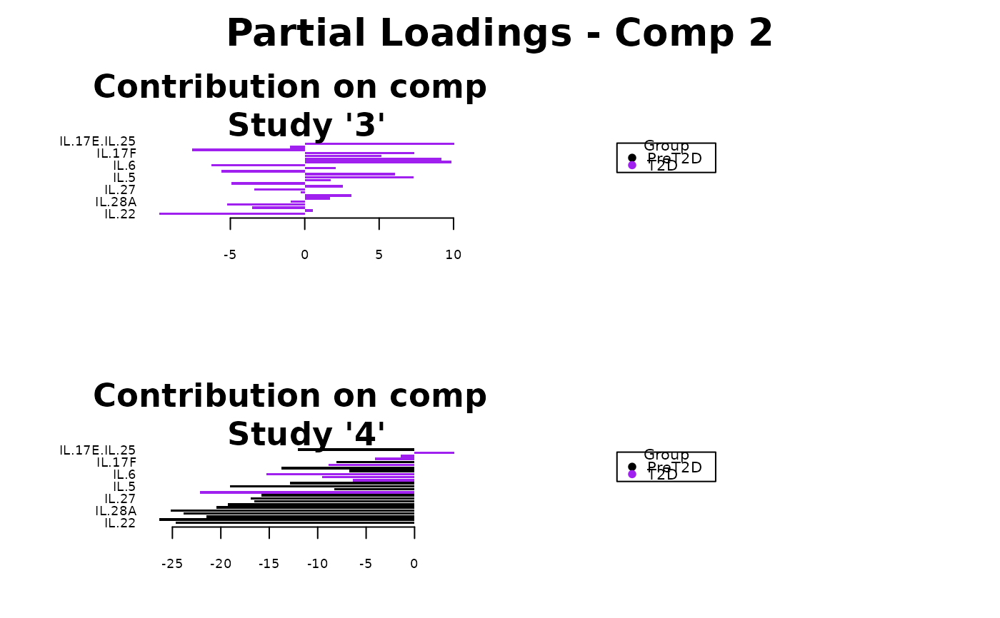
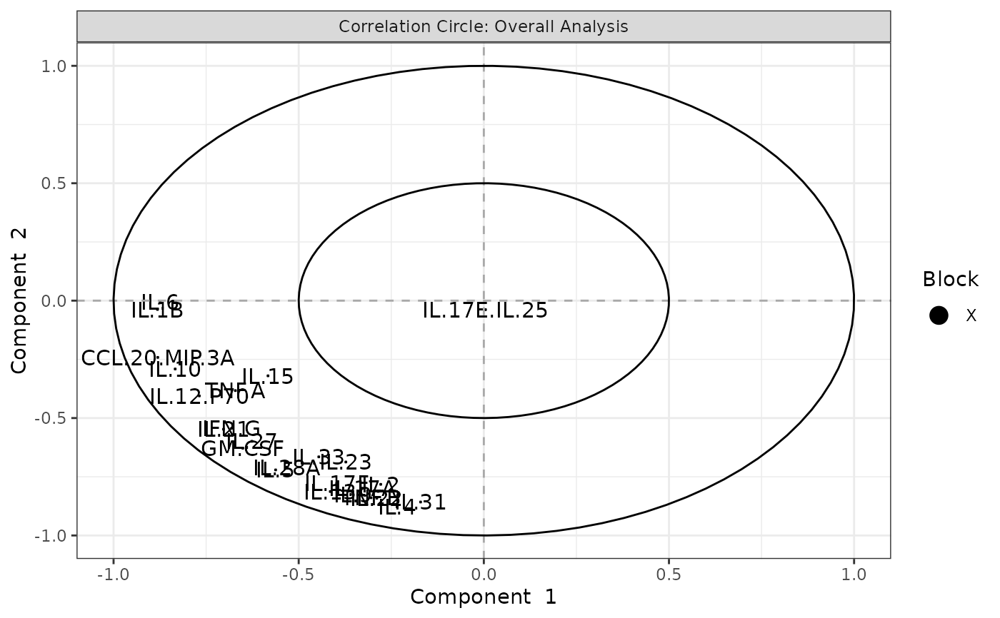